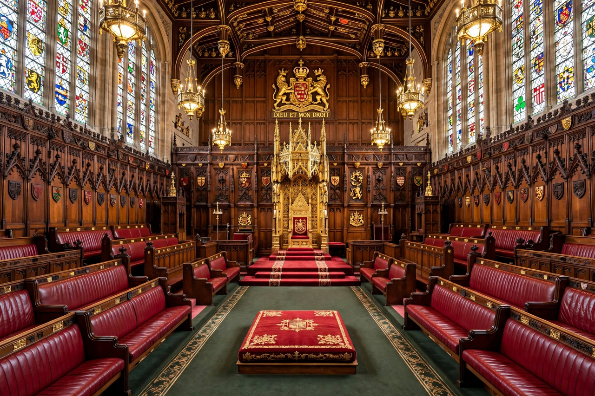

House of Lords Act 1999

The House of Lords Act 1999 (c. 34) is an Act of the Parliament of the United Kingdom that reformed the House of Lords, removing the automatic right of most hereditary peers to sit and vote in the upper chamber. It was a flagship measure of the Labour government of Tony Blair and reduced the membership of the Lords from over 1,300 to about 670 at a stroke.
| Citation | 1999 c. 34 |
|---|---|
| Introduced by | Lord Irvine of Lairg, Lord Chancellor |
| Royal assent | 11 November 1999 |
| Status | Current legislation |
Provisions
Section 1 of the Act provides that no one shall be a member of the House of Lords by virtue of a hereditary peerage. As a transitional compromise — the Weatherill Amendment, negotiated with the Conservative leader in the Lords, Viscount Cranborne — 92 hereditary peers were excepted: 75 elected by their party or crossbench groups, 15 elected by the whole House to serve as office-holders such as deputy speakers, and the Earl Marshal and Lord Great Chamberlain as royal office-holders. Vacancies among the 92 were filled by by-elections among hereditary peers, a practice later criticised as anachronistic.
The Act also disqualified members of the House from voting in elections to, or sitting in, the House of Commons on the same terms as other peers; previously excluded from the Lords, hereditary peeresses in their own right were unaffected in their seats unless excepted.
Background and passage
Removing the hereditaries had been Labour policy for decades and appeared in the party's 1997 manifesto, which promised that "the right of hereditary peers to sit and vote in the House of Lords will be ended by statute" as a first stage of reform. The bill passed the Commons comfortably but faced resistance in the Lords itself; the Cranborne deal, struck behind the scenes, secured its passage without a prolonged confrontation and despite the fury of some Conservative backbenchers at the concession.
Aftermath
The Act was intended as stage one of a two-stage reform; a Royal Commission under Lord Wakeham reported in 2000, but a fully or partly elected second chamber was never enacted, leaving the 92 hereditary places as a long-lived "temporary" arrangement. Later measures included the House of Lords Reform Act 2014 (retirement and expulsion) and subsequent bills to remove the remaining hereditary peers entirely, proposed by the Labour government elected in 2024.